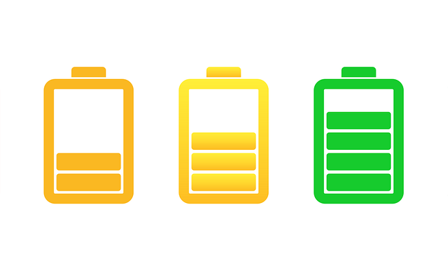
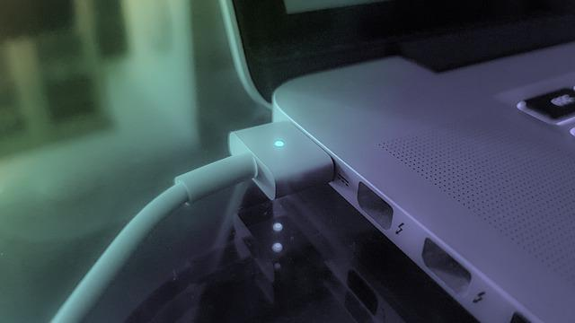
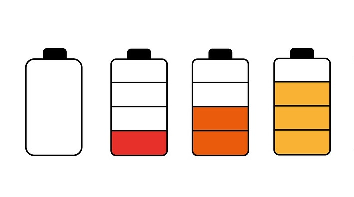
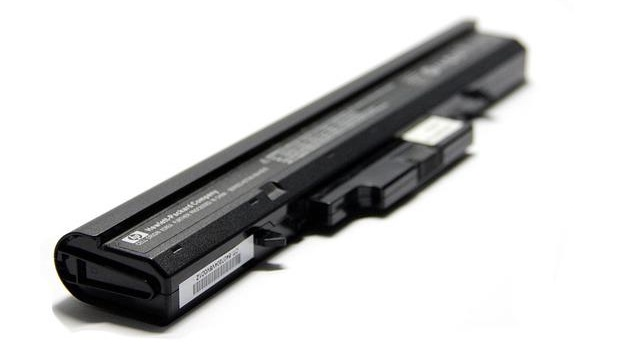
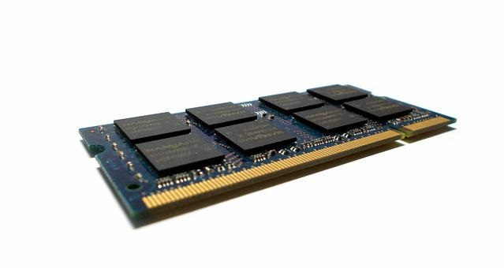
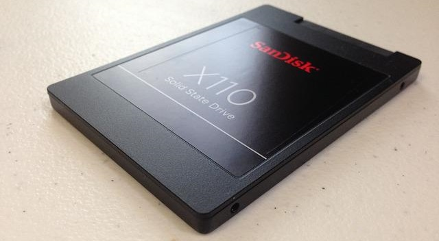

Toda batería se va a degradar, pero existen ciertas maneras para alargar la vida de ésta y te decimos cómo conseguirlo a base de cuidar ciertos detalles cuando uses tu portátil.
Las baterías que equipan los portátiles están condenadas a degradarse, perder capacidad y ofrecer menos autonomía de la inicial. Sin embargo, dependiendo de cómo usemos el portátil, podemos acelerar este proceso o ralentizarlo. En este caso, vamos a daros varios consejos para cuidar la batería del portátil, así como los errores que debéis evitar.
Por encima del 40% y recarga hasta el 80%

Muchos utilizaréis el portátil sin cargador de por medio, haciendo uso único de la batería. Intentad mantenerla por encima del 40%, y llegados a este punto intentad cargarla hasta que tenga un 80%.
Entendemos que es una incongruencia en sí misma porque vamos a seguir usándolo, pero no lo cargamos de forma total. Este consejo es importante darlo para saber cómo cuidar la batería del portátil y lo da Battery University: una batería cargada de 0% a 100% puede llegar hasta 500 ciclos, mientras que cargada al 80% se puede elevar dicha cifra a 1500.
Las marcas de portátiles suelen ofrecer aplicaciones instaladas por defecto que fijan un máximo de carga de la batería. Los ejemplos son Lenovo, Samsung o Sony, por lo que comprobad si los ASUS o MSI ofrecen también este limitador de carga.
Cargador enchufado y batería al 100%: evita que se caliente

Es importantísimo evitar poner al portátil en sitios calientes, pero tampoco lo metáis en un congelador o nevera. El calor es malísimo para la degradación de batería, debido a que se puede dañar y pierde capacidad.
Lo que suele ocurrir cuando tenemos el portátil al 100% de batería y no hemos quitado el cargador, es que esa energía se bloquea por parte de la batería y se distribuye a los componentes.
Cuidado dónde guardas el portátil
Intentad no poner el portátil en vuestras piernas cuando veis una película o en un sitio en el que los ventiladores inferiores no puedan trabajar. No solo podéis quemaros la piel por culpa del calor de la base del portátil, sino que esto es malísimo para la refrigeración.
En los portátiles gaming vemos más refrigeración en los laterales o, incluso, en los biseles de la pantalla. Al contrario, la gran mayoría de modelos de gama media y baja no tienen tan cuidado este aspecto, por lo que una idea sobre cómo cuidar la batería del portátil es:
-Guardarlo en un sitio fresco o lejos del calor.
-Cuidado donde lo colocáis, que sea un sitio en el que los ventiladores puedan expulsar el calor del interior.
-El calor degrada muchísimo la batería, habiendo diferencias de hasta del 29% de degradación, ¡podemos degradarla un 30% menos si la mantenemos fresca!
Nunca dejes que esté a 0%

Dejarla a 0% provoca estrés en la batería, ya sea de un smartphone o de un portátil. Entendemos que es complicado para muchos mantener las cargas entre el 40 y 80 por ciento, pero no debéis dejar que se descargue por completo.
Para más inri, si luego la cargáis al 100% peor. Solo podemos aconsejaros hacer una descarga completa cuando queráis cambiar la batería por una nueva. En este sentido, hay que vaciar el dispositivo de energía para calibrar los porcentajes.
¿A quién se le ha apagado el portátil cuando tenía un 10% de batería? Esto nos ha pasado a muchos, y eso es señal de que no está calibrada.
Sustituir batería, ¿sí o no?

Muchas marcas recomiendan sustituir la batería cuando está por debajo del 80% de su capacidad, siendo Apple una de las que apuesta por esta estrategia. Os preguntaréis, ¿por qué? Básicamente porque la resistencia se acumula, provocando que cada vez tardemos más en cargar completamente el dispositivo.
En mi experiencia, recomiendo esto para aquellos que os sea totalmente necesario gozar de una buena autonomía y de unos ciclos de carga más rápidos. Como usuario de un portátil ASUS de hace 7 años, pierdes mucha autonomía, pero si dispones de un enchufe para cargador cerca… no lo cambies a no ser que sea completamente necesario.
Usa inteligentemente la batería: perfiles de energía y ahorro
Salvo que necesitéis el máximo rendimiento en determinados momentos, Windows pone a nuestro alcance perfiles de energía cuyo uso es esencial. Activad el modo ahorro de batería en vuestro portátil cuando estéis a menos del 50%, reduciendo el brillo, deteniendo descargas, sincronizaciones y aplicaciones en segundo plano.
Con Windows 10 podéis hacerlo fácilmente desde la esquina derecha de la barra de tareas, haciendo clic izquierdo en el icono de la batería. Lo mismo con MacBook y macOS, también tienen sus modos de optimización, pudiendo gestionarlo a través de la aplicación Preferencias -> Batería.
Considera el modo avión
Si no necesitáis Wi-Fi, ni bluetooth, ni nada inalámbrico, poned el portátil en modo avión para trabajar y funcionar sin gastar más batería de la necesaria. El objetivo aquí es reducir el gasto de la batería para evitar ir acumulando ciclos de carga.
Se puede decir que es una forma de reducir el gasto de la batería para evitar cargarla, lo que provoca un efecto en cadena: menos batería, menos cargas, menos degradación, mayor vida de batería.
Más memoria RAM para evitar que el SSD/HDD trabaje

Nos ha parecido curioso este consejo, y es que lo desconocíamos, teniendo como origen Dell. Ya sabéis que Dell es un fabricante TOP de portátiles, más enfocados al ámbito profesional.
Pues, sugieren que tengamos suficiente memoria RAM para gestionar todos los procesos, ya que es posible que ésta almacene información en vez del disco duro. Así que, el hecho de hacer trabajar menos al HDD o SSD, permite que gastemos más batería y, por ende, carguemos menos el portátil.
SSD en vez de HDD para consumir menos energía

Por último, si queremos ahorrar energía en nuestro portátil para evitar cargas, es útil usar un SSD en vez de un HDD. La razón está en que consumen menos energía, especialmente aquellos que tienen un formato M.2.
Tened en cuenta que los SSD M.2 se conectan directamente a la placa base, no hacen uso de la interfaz SATA, sino PCI-Express.
Y aquí llegan a su fin los consejos para saber cómo cuidar la batería del portátil. Si tenéis alguna duda, dejadalo abajo y nosotros les contestaremos en breve.